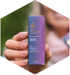
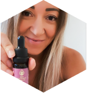

Sügavama une heaks
Unetus on tänapäeval suureks probleemiks. Unehäire puhul on päevane enesetunne häiritud – esineb väsimus, soov magada, kuid ka päevasel ajal on raske uinuda.
Naturale Premium õli mõjutab aju ja organismi reguleerides unetsükleid, emotsioone, põletikku ja valu. On tõenäoline, et õli aitab unetuse vastu ja võib vähendada ärevust. Naturale Premium õli võib parandada ka REM-und, millel on oluline roll, et inimene ennast korralikult välja puhkaks.
Unetus on tänapäeval suureks probleemiks. Unehäire puhul on päevane enesetunne häiritud – esineb väsimus, soov magada, kuid ka päevasel ajal on raske uinuda.
Loe lähemalt-
Loe lähemalt
-
Meditsiinilise kvaliteediga
-
100% Vegan
-
Eesti mahetoodang
TAGASISIDE
Mida teistel öelda on?
-
CAROLYN
Kehv ja raske uinumine viiski mind Naturale Premium õlini. Uinuda on lihtsam, keha puhkab paremini välja, ärevus on väiksem või lausa olematu ja peavalud ei kimbuta sellisel moel nagu vanasti.
-

AURI
Sain tänu Naturale Premium õlile paremini magada, muidu oli uni lünklik ja kaootiline, tänu sellele magan öö otsa ja olen puhanud. Samuti pole nii närviline enam.
-

BIRGIT
Tänu Naturale Premium õlile sain ma igapäevase 5h asemel magada 10h! Täiesti ulmeline toode. Mitte ükski teine asi, mida poovinud olen, ei ole andnud selliseid tulemusi! Lihtsalt wow! Muide, olen märganud, et ka libiidole mõjub positiivselt.